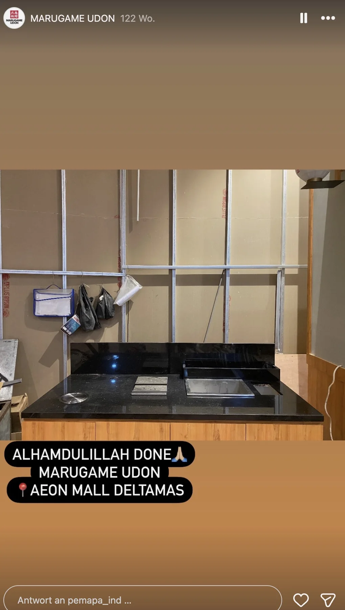

Marugame Udon
Marugame Udon (Multi-Cabang)
Pengerjaan meja kasir, bar penyajian udon, dan top table berbahan granit hitam pekat yang tahan terhadap kuah panas kaldu, uap air, dan aktivitas tamu yang padat.
Titik Cabang & Jenis Pekerjaan:
- • Cabang AEON Mall Deltamas: Black Granite Counter Top Table & Meja Kitchen Bar (Foto Asli Lapangan)
- • Cabang Riau, Bandung: Meja Kasir Utama, Area Pantry & Top Table Dining Pengunjung
- • Cabang Summarecon Mall Bandung: Black Marble Service Counter & Meja Kasir Utama
- • Cabang Kaliurang, Yogyakarta: Kitchen Counter & Top Table Granit Hitam
- • Cabang Cibubur: Flooring & Counter Stone Finishing / Terrazzo Treatment